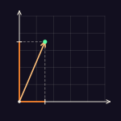

Projections
An essay that teaches Fourier transforms by locking you in an escape room with a signal, a keypad and a chatbot that will only explain things twice. A paper that squeezes momentum tensors with a cosine transform sent me off to learn the transform properly, which took about two months. The maths is typeset with KaTeX, and the first figure is only the vector (3, 7) split into its two coordinates. [draft]
Built with: HTML, CSS, KaTeX